장학금 지원
-
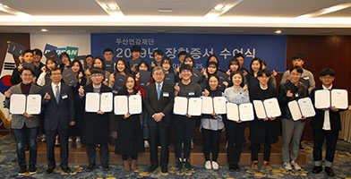 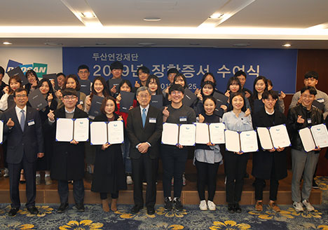
- 두산연강 장학금
- 1979년부터 어려운 환경 속에서도 성적이 우수한 고등학생 및 대학생을 매년 '두산연강 장학생'으로 선발해 장학금을 지원하고 있습니다.
-
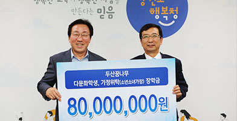 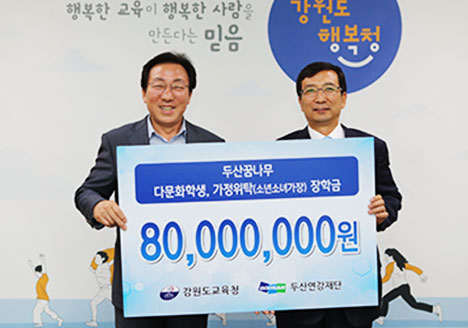
- 두산꿈나무장학금
- 2006년부터 어린 나이임에도 불구하고 힘든 환경에서 꿋꿋이 생활하는 초등학생 및 중학생을 선발해 장학금을 지원하고 있습니다.
-
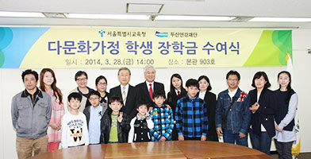 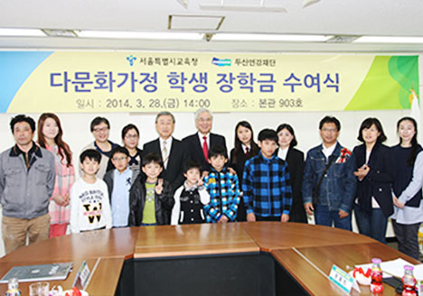
- 다문화가정장학금
- 2010년부터 가정형편이 어려운 다문화가정의 초등학생 및 중학생들에게 장학금을 지원하고 있습니다.
-
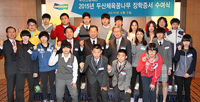 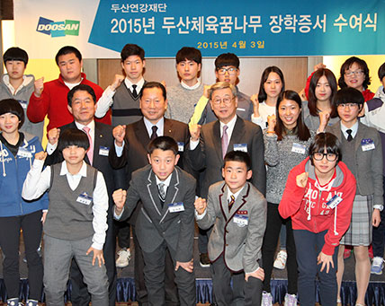
- 두산체육꿈나무장학금
- 2008년부터 체육 꿈나무를 조기 발굴하고 육성하기 위해 어려운 환경 속에서도 우수한 성적을 거두고 있는 체육 꿈나무들에게 장학금을 지원하고 있습니다.
-
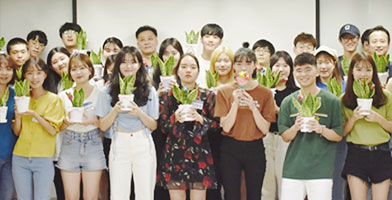 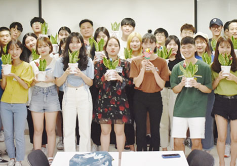
- 특별재해장학금
- 2006년부터 자연재해로 큰 피해를 당한 지역의 학생들이 학업을 계속할 수 있도록 장학금을 지원하고 있습니다.
 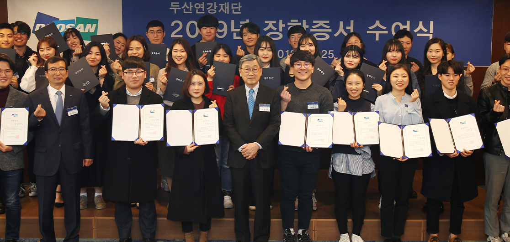
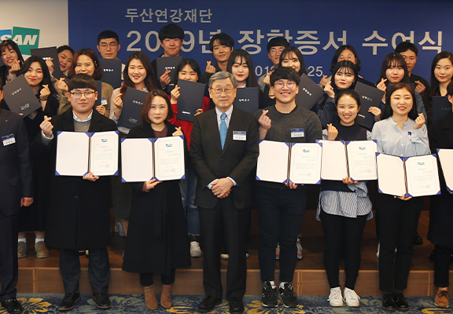
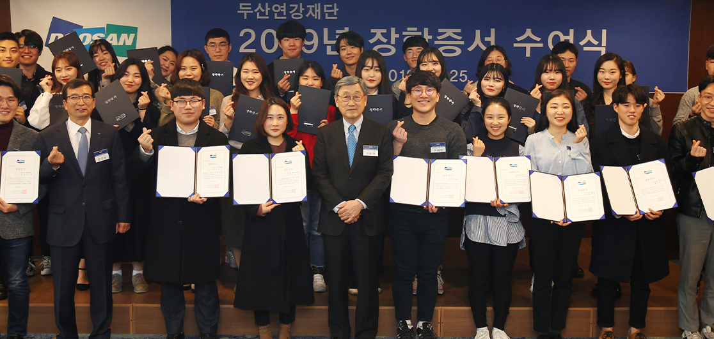
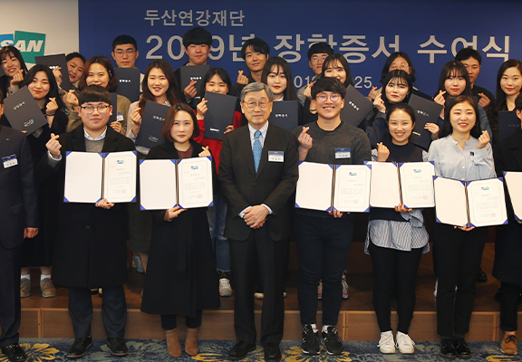